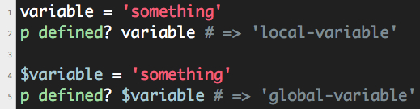

Week #6: Technical
Variable Scope
Variable scope determines where a variable can be accessed. There are four variable scopes in Ruby - local, global, instance, and class. You can tell what type of variable you are dealing with by looking at how the variable name starts:
- Local Variables - start with a lower case letter.
- Instance Variables - start with '@'.
- Class Variables - start with '@@'.
- Global Variables - start with '$'.
You can also find out what a variable is by using the 'defined?' method.

Local Variables
Local variables are what you're most used to seeing. They are 'local' to the code in which they are defined. For example, a variable defined within a method is a local variable and cannot be accessed outside of that method.
Global Variables
Global variables are accessible from anywhere in the program. Global variables are not used very often and that is why you probably haven’t seen them much.
Class Variables
A class variable is used within a class. It is shared amongst the class and all of it's descendants.
Instance Variables
An instance variable is used within a class. It is not shared by the class's descendants.